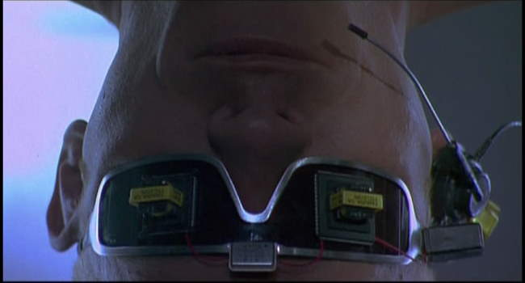
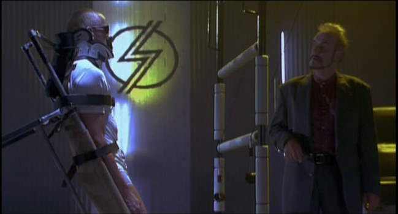
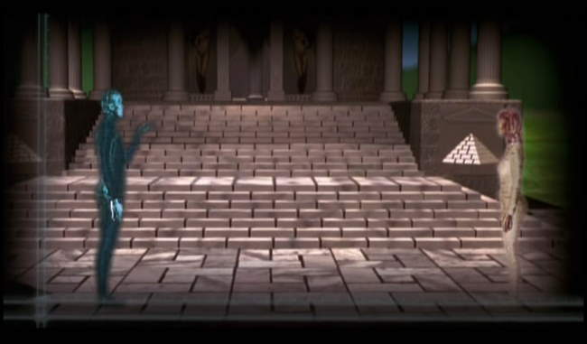

Movie review by : SFAM
Year : 1998
Directed by : Thomas Borch Nielsen
Written by : Thomas Borch Nielsen
Degree of Cyberpunk visuals : High
Correlation to Cyberpunk themes : Low
Rating : 4/10
Key cast members :

Overview: Yet another example of an ultra-buff weight-lifting zen super-hacker type who likes to log on almost naked while chicks watch him. In Webmaster (Skyggen is the original name), we get a story that shows the seedy underside of how to motivate network administrators when they fuck up and let a hacker in ? just painfully force a multi-needle puncture device directly into their heart and give them a time limit to find the hacker before the device kills them! You might find this to be a short term solution, but I'm sure there's a never-ending supply of good network administrators just waiting to take their place.

The Story: J.B. (Lars Bom) - an ultra-talented Webmaster of an illicit cyber-domain known for massive amounts of illegal money transfers is captured and is put under suspicion by the cyber-domain boss named Stoiss (Jørgen Kiil) when an intruder hacks into the system and steals the Stoiss's money. Stoiss sticks a heart controller device on J.B. and gives him 35 hours to find who took his money or he dies. From this point, it becomes a straight, cheesy techno-thriller. J.B. and his girlfriend (Puk Scharbau) have to track down the hacker chick who's caused the problems or else. While there were a few cool ideas early on, including highly powerful intelligent agents called "cyber-egos" that can be programmed to do all sorts of helper functions, unfortunately, these end up being peripheral to the story.

The Visuals: Webmaster seems to throw in lots of random visuals here, including a sexy black nylon S&M scene, strange dystopic surroundings and various other scenes. Unfortunately, for the most part these scenes don't fit into the plot very well. Webmaster 's FX are painfully bad. They would have been better off replicating VR by using real actors in a sleak, black room or something. Worse, we are told that Still, the glasses look cool, and there's a fun Hannibal Lector shot. Some of the set pieces are decent, but overall, we get a cheesy looking unspecified cyberpunk environment.
The Security: If it was written earlier, I might have thought that Skyggen written at a time when they thought most of us were completely uneducated where security issues were concerned. Webmaster has this incredibly bizarre multi-leveled security set up that can be completely bypassed if you get someone's personal disc. Even weirder, supposedly, most of the transactions that take place involve illegal transfers of massive amounts of money. So, um, do the mafia dudes just send their address when they register in order for the site to send them their profile directly to their mafia hideout? Even worse, if the CEO doesn't enter a special code each day, the entire system grinds to a halt. That's the way to keep your customers ? talk about a single point of failure! Even weirder ? these discs which store your personal profile can be hacked into a written on! Worse, nobody apparently backs up their software, so if someone downloads your "ego-disc", you lose it!
The Bottom Line: Unfortunately, the movie is in Danish, but my copy is dubbed in English ? this review reflects this. However, I don't know that it would matter much, as Skyggen is basically a low-quality, simplistic thriller with cyberpunk visuals for the wrapping. But even these lose their luster. Webmaster might have worked better if more attention was paid to the story, or the editing for that matter. Had it pursued some of the interesting VR themes it started off with better, this too might have helped. Instead, there are a stream lot of random scenes in Webmaster that have virtually nothing to do with the simplistic plot. Still, even though the effects are low quality, the cyberpunk visuals and hot chicks in black nylon may make it worth a watch for some.